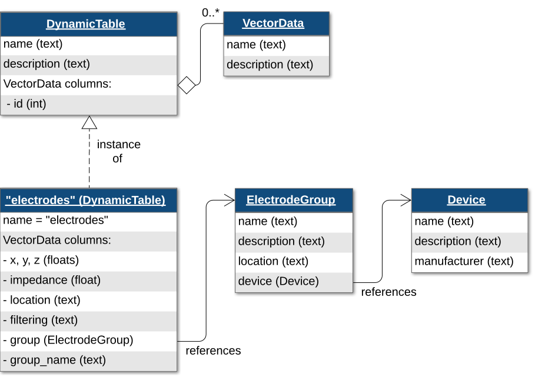
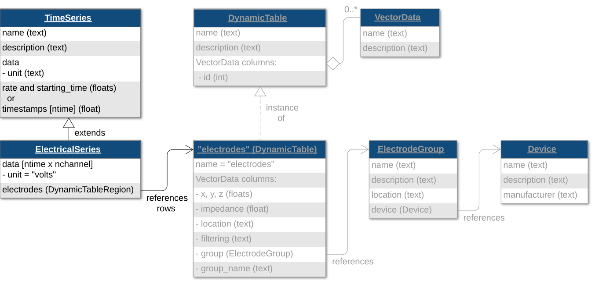
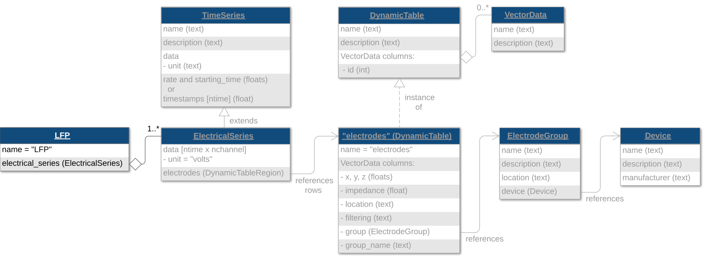

Note
Go to the end to download the full example code.
Extracellular Electrophysiology Data
This tutorial describes storage of extracellular electrophysiology data in NWB in four main steps:
Create the electrodes table
Add acquired raw voltage data
Add LFP data
Add spike data
It is recommended to cover NWB File Basics before this tutorial.
Note
It is recommended to check if your source data is supported by NeuroConv Extracellular Electrophysiology Gallery. If it is supported, it is recommended to use NeuroConv to convert your data.
The following examples will reference variables that may not be defined within the block they are used in. For clarity, we define them here:
from datetime import datetime
from uuid import uuid4
import numpy as np
from dateutil.tz import tzlocal
from pynwb import NWBHDF5IO, NWBFile
from pynwb.ecephys import LFP, ElectricalSeries, SpikeEventSeries
from pynwb.misc import DecompositionSeries
Creating and Writing NWB files
When creating a NWB file, the first step is to create the NWBFile.
nwbfile = NWBFile(
session_description="my first synthetic recording",
identifier=str(uuid4()),
session_start_time=datetime.now(tzlocal()),
experimenter=[
"Baggins, Bilbo",
],
lab="Bag End Laboratory",
institution="University of Middle Earth at the Shire",
experiment_description="I went on an adventure to reclaim vast treasures.",
keywords=["ecephys", "exploration", "wanderlust"],
related_publications="doi:10.1016/j.neuron.2016.12.011",
)
Electrodes Table
To store extracellular electrophysiology data, you first must create an electrodes table
describing the electrodes that generated this data. Extracellular electrodes are stored in an
"electrodes" table, which is a DynamicTable.
{kind=link}

The electrodes table references a required ElectrodeGroup, which is used to represent a
group of electrodes. Before creating an ElectrodeGroup, you must define a
Device object using the method NWBFile.create_device. The fields
description, serial_number, and model are optional, but recommended. The
DeviceModel object stores information about the device model, which can be useful
when searching a set of NWB files or a data archive for all files that use a specific device model
(e.g., Neuropixels probe).
device_model = nwbfile.create_device_model(
name="Neurovoxels 0.99",
manufacturer="Array Technologies",
model_number="PRB_1_4_0480_123",
description="A 12-channel array with 4 shanks and 3 channels per shank",
)
device = nwbfile.create_device(
name="array",
description="A 12-channel array with 4 shanks and 3 channels per shank",
serial_number="1234567890",
model=device_model,
)
Once you have created the Device, you can create an
ElectrodeGroup. Then you can add electrodes one-at-a-time with
NWBFile.add_electrode. NWBFile.add_electrode has two required arguments,
group, which takes an ElectrodeGroup, and location, which takes a string. It also
has a number of optional metadata fields for electrode features (e.g, x, y, z, imp,
and filtering). Since this table is a DynamicTable, we can add
additional user-specified metadata as custom columns of the table. We will be adding a "label" column to the
table. Use the following code to add electrodes for an array with 4 shanks and 3 channels per shank.
nwbfile.add_electrode_column(name="label", description="label of electrode")
nshanks = 4
nchannels_per_shank = 3
electrode_counter = 0
for ishank in range(nshanks):
# create an electrode group for this shank
electrode_group = nwbfile.create_electrode_group(
name="shank{}".format(ishank),
description="electrode group for shank {}".format(ishank),
device=device,
location="brain area",
)
# add electrodes to the electrode table
for ielec in range(nchannels_per_shank):
nwbfile.add_electrode(
group=electrode_group,
location="brain area",
label="shank{}elec{}".format(ishank, ielec), # custom column data are specified with keyword arguments
)
electrode_counter += 1
Similarly to other tables in PyNWB, we can view the electrodes table in tabular form
by converting it to a pandas DataFrame.
nwbfile.electrodes.to_dataframe()
Note
When we added an electrode with the add_electrode
method, we passed in the ElectrodeGroup object for the "group" argument.
This creates a reference from the "electrodes" table to the individual
ElectrodeGroup objects, one per row (electrode).
Extracellular recordings
Raw voltage traces and local-field potential (LFP) data are stored in ElectricalSeries
objects. ElectricalSeries is a subclass of TimeSeries
specialized for voltage data. To create the ElectricalSeries objects, we need to
reference a set of rows in the "electrodes" table to indicate which electrodes were recorded. We will do this
by creating a DynamicTableRegion, which is a type of link that allows you to reference
rows of a DynamicTable. NWBFile.create_electrode_table_region is a
convenience function that creates a DynamicTableRegion which references the
"electrodes" table.
all_table_region = nwbfile.create_electrode_table_region(
region=list(range(electrode_counter)), # reference row indices 0 to N-1
description="all electrodes",
)
Raw voltage data
Now create an ElectricalSeries object to store raw data collected
during the experiment, passing in this all_table_region DynamicTableRegion
reference to all rows of the electrodes table.
{kind=link}

raw_data = np.random.randn(50, 12)
raw_electrical_series = ElectricalSeries(
name="ElectricalSeries",
description="Raw acquisition traces",
data=raw_data,
electrodes=all_table_region,
starting_time=0.0, # timestamp of the first sample in seconds relative to the session start time
rate=20000.0, # in Hz
)
Since this ElectricalSeries represents raw data from the data acquisition system,
add it to the acquisition group of the NWBFile.
nwbfile.add_acquisition(raw_electrical_series)
LFP
Now create an ElectricalSeries object to store LFP data collected during the experiment,
again passing in the DynamicTableRegion reference to all rows of the "electrodes"
table.
lfp_data = np.random.randn(50, 12)
lfp_electrical_series = ElectricalSeries(
name="ElectricalSeries",
description="LFP data",
data=lfp_data,
filtering='Low-pass filter at 300 Hz',
electrodes=all_table_region,
starting_time=0.0,
rate=200.0,
)
To help data analysis and visualization tools know that this ElectricalSeries object
represents LFP data, store the ElectricalSeries object inside of an
LFP object. This is analogous to how we can store the
SpatialSeries object inside of a Position object.
{kind=link}

lfp = LFP(electrical_series=lfp_electrical_series)
LFP refers to data that has been low-pass filtered, typically below 300 Hz. This data may also be downsampled. Because it is filtered and potentially resampled, it is categorized as processed data.
Create a processing module named "ecephys" and add the LFP object to it.
This is analogous to how we can store the Position object in a processing module
created with the method NWBFile.create_processing_module.
ecephys_module = nwbfile.create_processing_module(
name="ecephys", description="processed extracellular electrophysiology data"
)
ecephys_module.add(lfp)
If your data is filtered for frequency ranges other than LFP — such as Gamma or Theta — you should store it in an
ElectricalSeries and encapsulate it within a
FilteredEphys object.
from pynwb.ecephys import FilteredEphys
filtered_data = np.random.randn(50, 12)
filtered_electrical_series = ElectricalSeries(
name="FilteredElectricalSeries",
description="Filtered data",
data=filtered_data,
filtering='Band-pass filtered between 4 and 8 Hz',
electrodes=all_table_region,
starting_time=0.0,
rate=200.0,
)
filtered_ephys = FilteredEphys(electrical_series=filtered_electrical_series)
ecephys_module.add(filtered_ephys)
In some cases, you may want to further process the LFP data and decompose the signal into different frequency bands
to use for other downstream analyses. You can store the processed data from these spectral analyses using a
DecompositionSeries object. This object allows you to include metadata about the frequency
bands and metric used (e.g., power, phase, amplitude), as well as link the decomposed data to the original
TimeSeries signal the data was derived from.
Note
When adding data to DecompositionSeries, the data argument is assumed to be
3D where the first dimension is time, the second dimension is channels, and the third dimension is bands.
bands = dict(theta=(4.0, 12.0),
beta=(12.0, 30.0),
gamma=(30.0, 80.0)) # in Hz
phase_data = np.random.randn(50, 12, len(bands)) # 50 samples, 12 channels, 3 frequency bands
decomp_series = DecompositionSeries(
name="theta",
description="phase of bandpass filtered LFP data",
data=phase_data,
metric='phase',
rate=200.0,
source_channels=all_table_region,
source_timeseries=lfp_electrical_series,
)
for band_name, band_limits in bands.items():
decomp_series.add_band(
band_name=band_name,
band_limits=band_limits,
)
ecephys_module.add(decomp_series)
The frequency band information can also be viewed as a pandas DataFrame.
decomp_series.bands.to_dataframe()
Sorted spike times
Spike times are stored in the Units table, which is a subclass of
DynamicTable. Adding columns to the Units table is analogous
to how we can add columns to the "electrodes" and "trials" tables. Use the convenience method
NWBFile.add_unit_column to add a new column on the Units table for the
sorting quality of the units.
nwbfile.add_unit_column(name="quality", description="sorting quality")
Generate some random spike data and populate the Units table using the
method NWBFile.add_unit.
firing_rate = 20
n_units = 10
res = 1000
duration = 20
for n_units_per_shank in range(n_units):
spike_times = np.where(np.random.rand((res * duration)) < (firing_rate / res))[0] / res
# custom column data, e.g., quality, are specified with keyword arguments to `add_unit`
nwbfile.add_unit(spike_times=spike_times, quality="good")
The resolution field on the Units table documents the precision of spike timing
data, typically 1 / sampling_rate of the acquisition system (i.e., the smallest measurable difference
between two spike times, in seconds). Setting it helps downstream users judge whether fine-timescale
analyses are appropriate for the dataset.
nwbfile.units.resolution = 1 / res # resolution in seconds (1 / sampling rate)
The Units table can also be converted to a pandas DataFrame.
The Units table can contain simply the spike times of sorted units, or you can also include
individual and mean waveform information in some of the optional, predefined Units table
columns: waveform_mean, waveform_sd, or waveforms.
nwbfile.units.to_dataframe()
Unsorted spike times
While the Units table is used to store spike times and waveform data for
spike-sorted, single-unit activity, you may also want to store spike times and waveform snippets of
unsorted spiking activity (e.g., multi-unit activity detected via threshold crossings during data acquisition).
This information can be stored using SpikeEventSeries objects.
spike_snippets = np.random.rand(40, 3, 30) # 40 events, 3 channels, 30 samples per event
shank0 = nwbfile.create_electrode_table_region(
region=[0, 1, 2],
description="shank0",
)
spike_events = SpikeEventSeries(
name='SpikeEvents_Shank0',
description="events detected with 100uV threshold",
data=spike_snippets,
timestamps=np.arange(40).astype(float),
electrodes=shank0,
)
nwbfile.add_acquisition(spike_events)
If you need to store the complete, continuous raw voltage traces, along with unsorted spike times, you should store
the traces with ElectricalSeries objects as acquisition data,
and use the EventDetection class to identify the spike events in your raw traces.
from pynwb.ecephys import EventDetection
event_detection = EventDetection(
name="threshold_events",
detection_method="thresholding, 1.5 * std",
source_electricalseries=raw_electrical_series,
source_idx=[[1000, 0], [2000, 4], [3000, 8]], # indicates the time and channel indices
times=[.033, .066, .099],
)
ecephys_module.add(event_detection)
If you do not want to store the raw voltage traces and only the waveform ‘snippets’ surrounding spike events,
you should store the snippets with SpikeEventSeries objects.
NWB also provides a way to store features of spikes, such as principal components, using the
FeatureExtraction class.
from pynwb.ecephys import FeatureExtraction
feature_extraction = FeatureExtraction(
name="PCA_features",
electrodes=all_table_region,
description=["PC1", "PC2", "PC3", "PC4"],
times=[.033, .066, .099],
features=np.random.rand(3, 12, 4), # time, channel, feature
)
ecephys_module.add(feature_extraction)
Writing electrophysiology data
Once you have finished adding all of your data to the NWBFile,
write the file with NWBHDF5IO.
with NWBHDF5IO("ecephys_tutorial.nwb", "w") as io:
io.write(nwbfile)
For more details on NWBHDF5IO, see the Writing an NWB file tutorial.
Reading electrophysiology data
Access the raw data by indexing acquisition
with the name of the ElectricalSeries, which we named "ElectricalSeries".
We can also access the LFP data by indexing processing
with the name of the processing module "ecephys".
Then, we can access the LFP object inside the "ecephys" processing module
by indexing it with the name of the LFP object.
The default name of LFP objects is "LFP".
Finally, we can access the ElectricalSeries object inside the
LFP object by indexing it with the name of the
ElectricalSeries object, which we named "ElectricalSeries".
with NWBHDF5IO("ecephys_tutorial.nwb", "r") as io:
read_nwbfile = io.read()
print(read_nwbfile.acquisition["ElectricalSeries"])
print(read_nwbfile.processing["ecephys"])
print(read_nwbfile.processing["ecephys"]["LFP"])
print(read_nwbfile.processing["ecephys"]["LFP"]["ElectricalSeries"])
Accessing your data
Data arrays are read passively from the file. Calling the data attribute on a TimeSeries
such as a ElectricalSeries does not read the data values, but presents an
h5py.Dataset object that can be indexed to read data. You can use the [:] operator to read the entire
data array into memory.
Load and print all the data values of the ElectricalSeries
object representing the LFP data.
with NWBHDF5IO("ecephys_tutorial.nwb", "r") as io:
read_nwbfile = io.read()
print(read_nwbfile.processing["ecephys"]["LFP"]["ElectricalSeries"].data[:])
Accessing data regions
It is often preferable to read only a portion of the data. To do this, index
or slice into the data attribute just like if you index or slice a
numpy.ndarray.
The following code prints elements 0:10 in the first dimension (time)
and 0:3 in the second dimension (electrodes) from the LFP data we have written.
It also demonstrates how to access the spike times of the 0th unit.
with NWBHDF5IO("ecephys_tutorial.nwb", "r") as io:
read_nwbfile = io.read()
print("section of LFP:")
print(read_nwbfile.processing["ecephys"]["LFP"]["ElectricalSeries"].data[:10, :3])
print("")
print("spike times from 0th unit:")
print(read_nwbfile.units["spike_times"][0])